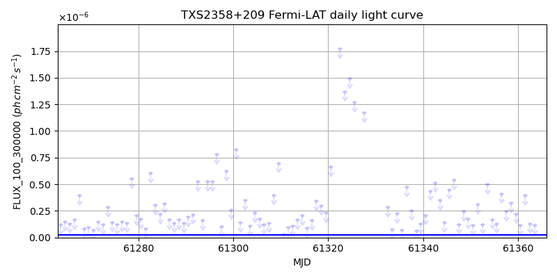
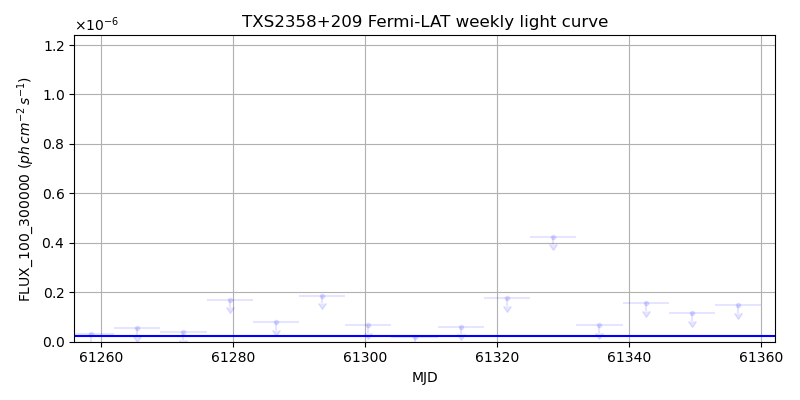
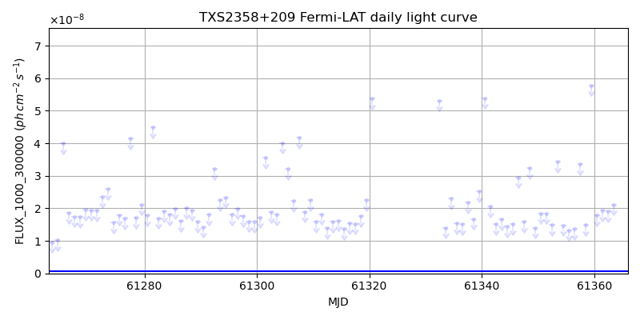
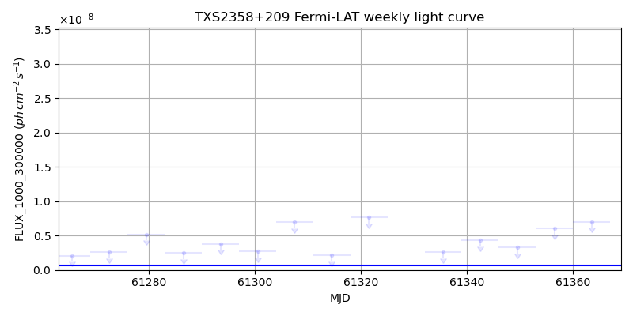

LAT Lightcurve site: https://fermi.gsfc.nasa.gov/ssc/data/access/lat/msl_lc/source/TXS_2358p209
NED: Query
Time of last update of this page: UT: 2026-11-20 16:10 (MJD: 61364.674)
| Property | Value |
|---|---|
| R.A. | 0:01:32.40 |
| Dec. | 21:13:37.2 |
| z | 1.106 |
| 3FGL SpectrumType | LogParabola |
| 3FGL PL Index | |
| 3FGL Flux_100_300000 | 2.29e-08 1 / (s cm2) |
| 3FGL Flux_1000_300000 | 6.11e-10 1 / (s cm2) |
| 3FGL Flux >200 GeV | 3.15e-17 1 / (s cm2) |
| 3FGL Extrap. Crab >200 GeV | 0.00 |
| 3FGL Flux After EBL Absorption >200GeV | 6.67e-19 1 / (s cm2) |
| 3FGL EBL Crab Fraction >200GeV | 0.00 |

| MJD | dMJD | Flux | dFlux | Frac3FGL | FracCrab>200GeV | EBLFracCrab>200GeV |
|---|---|---|---|---|---|---|
| 61359.50 | 0.50 | 2.22e-07 | 0.00e+00 | 0.00 | 0.00 | 0.00 |
| 61360.50 | 0.50 | 1.17e-07 | 0.00e+00 | 0.00 | 0.00 | 0.00 |
| 61361.50 | 0.50 | 3.94e-07 | 0.00e+00 | 0.00 | 0.00 | 0.00 |
| 61362.50 | 0.50 | 1.31e-07 | 0.00e+00 | 0.00 | 0.00 | 0.00 |
| 61363.50 | 0.50 | 1.18e-07 | 0.00e+00 | 0.00 | 0.00 | 0.00 |

| MJD | dMJD | Flux | dFlux | Frac3FGL | FracCrab>200GeV | EBLFracCrab>200GeV |
|---|---|---|---|---|---|---|
| 61328.50 | 3.50 | 4.25e-07 | 0.00e+00 | 0.00 | 0.00 | 0.00 |
| 61335.50 | 3.50 | 6.79e-08 | 0.00e+00 | 0.00 | 0.00 | 0.00 |
| 61342.50 | 3.50 | 1.55e-07 | 0.00e+00 | 0.00 | 0.00 | 0.00 |
| 61349.50 | 3.50 | 1.15e-07 | 0.00e+00 | 0.00 | 0.00 | 0.00 |
| 61356.50 | 3.50 | 1.47e-07 | 0.00e+00 | 0.00 | 0.00 | 0.00 |

| MJD | dMJD | Flux | dFlux | Frac3FGL | FracCrab>200GeV | EBLFracCrab>200GeV |
|---|---|---|---|---|---|---|
| 61359.50 | 0.50 | 5.79e-08 | 0.00e+00 | 0.00 | 0.00 | 0.00 |
| 61360.50 | 0.50 | 1.78e-08 | 0.00e+00 | 0.00 | 0.00 | 0.00 |
| 61361.50 | 0.50 | 1.93e-08 | 0.00e+00 | 0.00 | 0.00 | 0.00 |
| 61362.50 | 0.50 | 1.90e-08 | 0.00e+00 | 0.00 | 0.00 | 0.00 |
| 61363.50 | 0.50 | 2.12e-08 | 0.00e+00 | 0.00 | 0.00 | 0.00 |

| MJD | dMJD | Flux | dFlux | Frac3FGL | FracCrab>200GeV | EBLFracCrab>200GeV |
|---|---|---|---|---|---|---|
| 61328.50 | 3.50 | 1.08e-07 | 0.00e+00 | 0.00 | 0.00 | 0.00 |
| 61335.50 | 3.50 | 2.63e-09 | 0.00e+00 | 0.00 | 0.00 | 0.00 |
| 61342.50 | 3.50 | 4.32e-09 | 0.00e+00 | 0.00 | 0.00 | 0.00 |
| 61349.50 | 3.50 | 3.30e-09 | 0.00e+00 | 0.00 | 0.00 | 0.00 |
| 61356.50 | 3.50 | 6.02e-09 | 0.00e+00 | 0.00 | 0.00 | 0.00 |
--------------------------------------------------------- Using user-supplied coords: 0:01:32.40 21:13:37.2 2000 --------------------------------------------------------- FLWO UT night of: 2026-11-21 Local Sid. @ Midnight: 03:37 Sunset (-15.0) (local, UT): 18:33 01:33 Sunrise (-15.0) (local, UT): 05:47 12:47 Moonrise (local, UT): Moonset (local, UT): 03:40 10:40 Moon phase: 0.85 --------------------------------------------------------- AzTime LSID UT Obj_el Obj_az Mn_el Mn_az Sep. --------------------------------------------------------- 18:33 22:09 01:33 62.6 105.1 47.9 117.4 16.3 19:03 22:39 02:03 68.7 113.7 53.3 125.0 16.3 19:33 23:09 02:33 74.2 127.4 58.2 134.7 16.2 20:03 23:39 03:03 78.4 151.5 62.3 146.9 16.2 20:33 00:09 03:33 79.6 188.4 65.1 162.1 16.2 21:03 00:39 04:03 76.9 220.6 66.3 179.7 16.1 21:33 01:09 04:33 71.9 239.3 65.4 197.5 16.1 22:03 01:39 05:03 66.1 250.4 62.9 213.2 16.1 22:33 02:09 05:33 60.0 257.8 59.0 225.9 16.1 23:03 02:39 06:03 53.7 263.4 54.2 235.9 16.1 23:33 03:09 06:33 47.3 267.9 48.9 243.9 16.1 00:03 03:39 07:03 40.9 271.9 43.2 250.4 16.1 00:33 04:10 07:33 34.5 275.5 37.3 255.9 16.1 01:03 04:40 08:03 28.2 279.0 31.2 260.7 16.1 01:33 05:10 08:33 21.9 282.4 25.1 265.1 16.2 02:03 05:40 09:03 15.7 285.8 19.0 269.2 16.2 02:33 06:10 09:33 9.6 289.3 12.9 273.0 16.3 03:03 06:40 10:03 3.8 293.0 6.8 276.9 16.4 03:33 07:10 10:33 -1.3 296.9 1.0 280.7 16.5 04:03 07:40 11:03 -7.8 301.1 -4.9 284.7 16.6 04:33 08:10 11:33 -13.2 305.8 -11.1 288.8 16.7 05:03 08:40 12:03 -18.2 310.8 -16.8 293.2 16.8 05:33 09:10 12:33 -22.8 316.4 -22.3 298.1 17.0 05:47 09:25 12:47 -24.9 319.3 -24.8 300.5 17.0 --------------------------------------------------------- Dark hours >55 deg.: 0.00